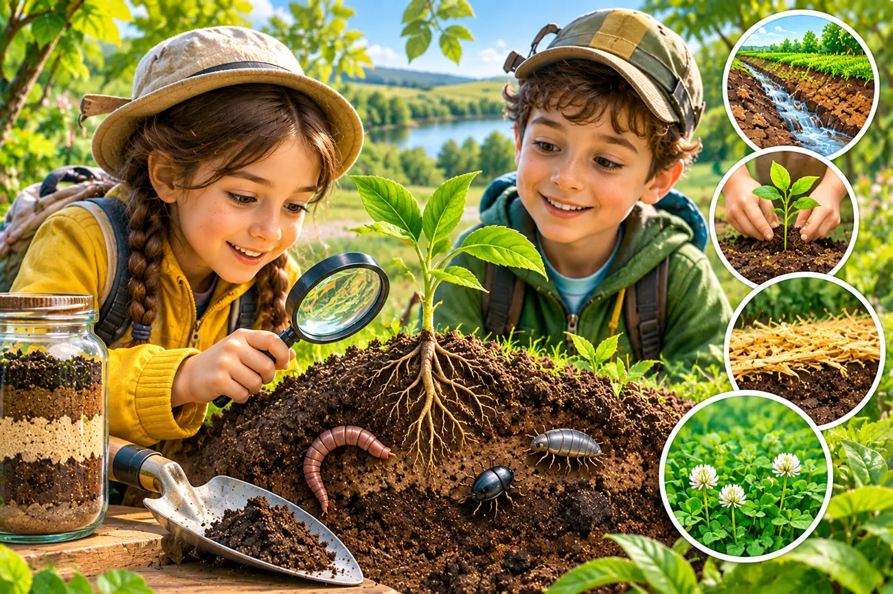
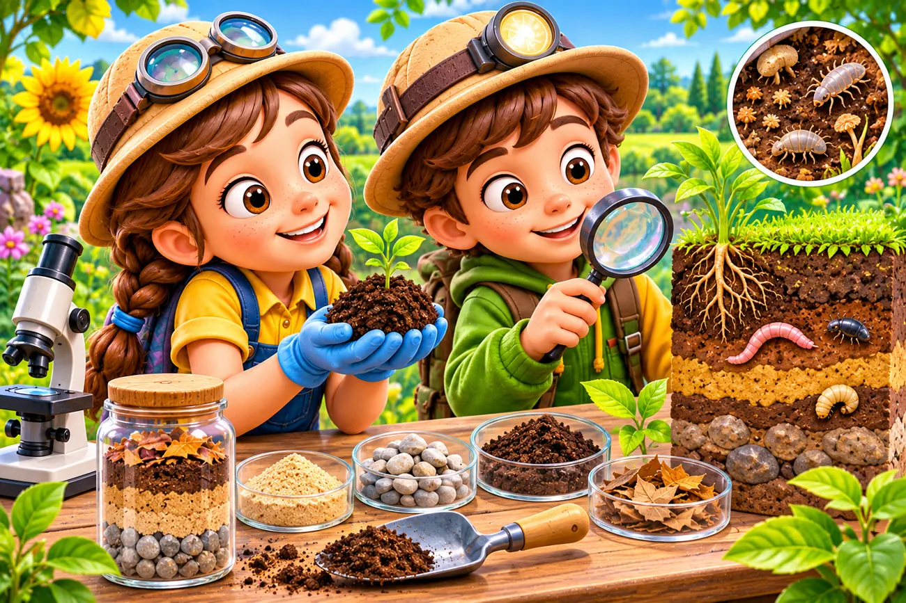
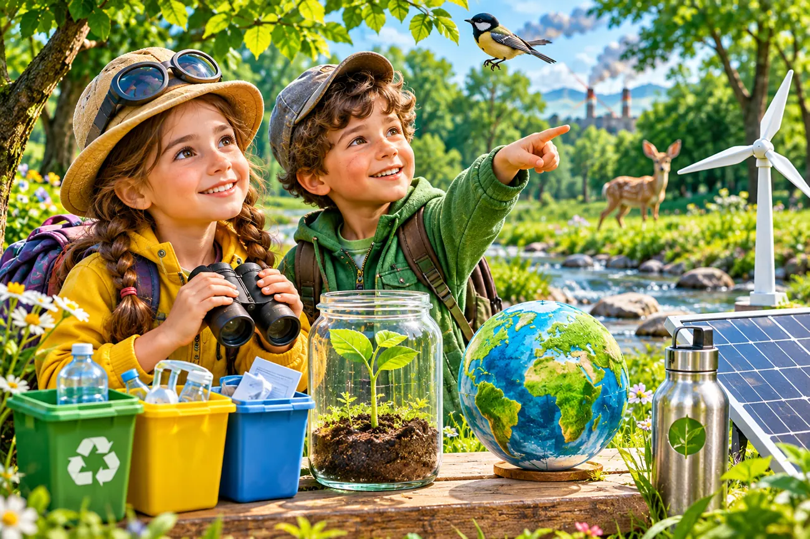

Досліджуємо властивості ґрунту
Ви — дослідники! Порівняйте ґрунтові зразки, перевірте, як вони пропускають воду, та зробіть власне відкриття.
🔍 Розпочати дослідження
💭 1. Подумайте!
Чому вода проходить крізь пісок швидше, ніж крізь глину? Оберіть припущення, а потім перевірте його.
🔬 2. Лабораторія ґрунту


Оберіть, що може бути складником природного ґрунту. Деякі варіанти зайві.
🧩 3. Знайдіть відповідності
Спочатку натисніть назву матеріалу, потім його опис. На комп'ютері також можна перетягнути назву на опис.
💧 4. Симулятор: куди подінеться вода?
Змініть склад ґрунту й кількість води. Спочатку зробіть прогноз, потім запустіть дослід.
Результат
Оберіть умови та запустіть дослід.
Це спрощена модель. У справжньому досліді результат залежить також від ущільнення, вологості та інших властивостей ґрунту.
🌱 5. Допомагає чи шкодить?
Розподіліть дії за двома групами. Можна натискати на картку, а потім на потрібну групу або перетягувати картки.
📝 6. Мініпроєкт «Ґрунт під лупою»
Уявіть, що Ви порівняли два зразки. Запишіть ознаки й запропонуйте безпечний спосіб берегти ґрунт.
🏆 7. Перевірте себе
✨ Підсумок уроку
Ґрунт складається з різних частинок, містить воду та повітря. Його властивості впливають на життя рослин.
Збережіть результати свого дослідження або роздивіться велику мапу уроку.